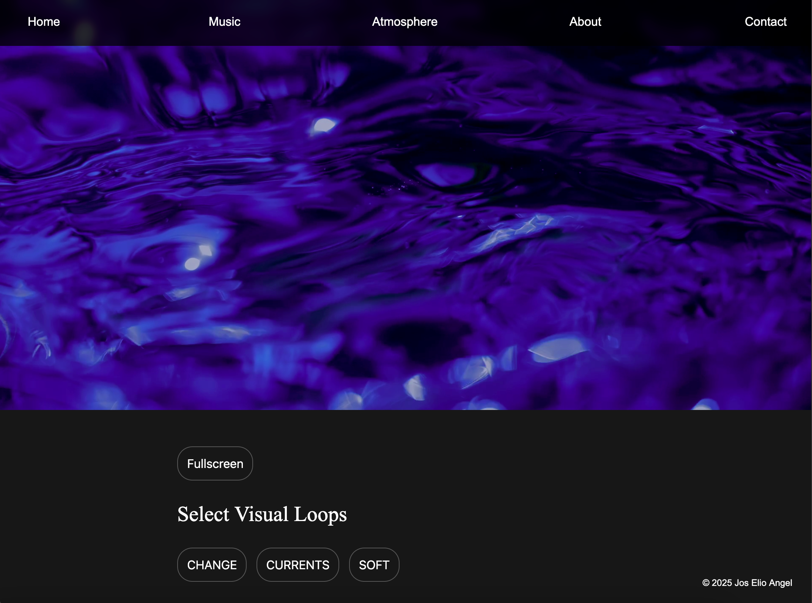

1 / 5
Visual Atmosphere Generator
Interactive visual tool for generating real-time visual atmospheres. Designed and implemented as a user-adjustable system for live visuals and performance contexts.
Audiovisual artist website of Jos Elio Angel.
Final Project for "CS50 – Introduction to Computer Science" at HarvardX.
HTML • CSS • JavaScript (Vanilla)